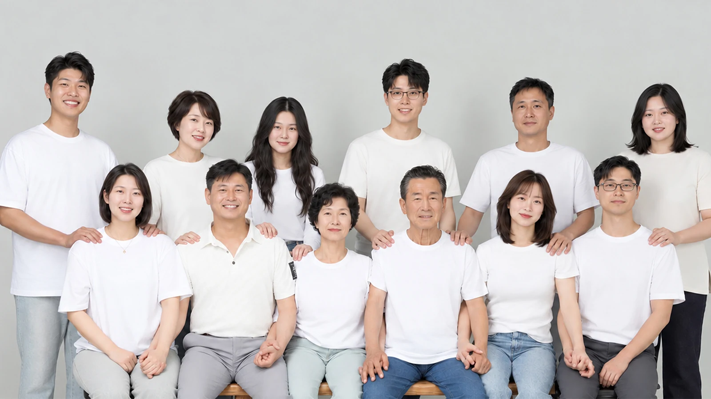
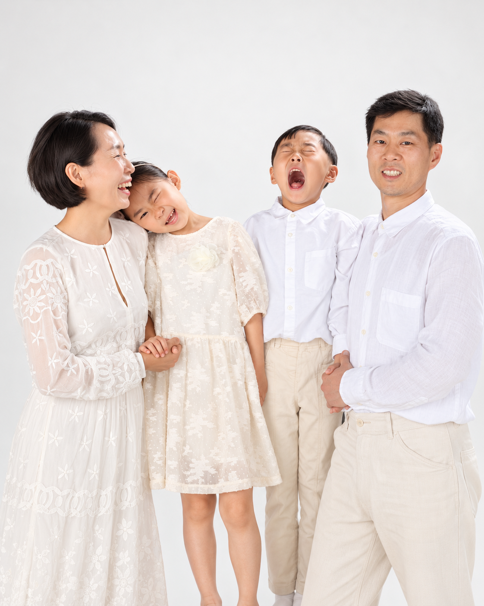
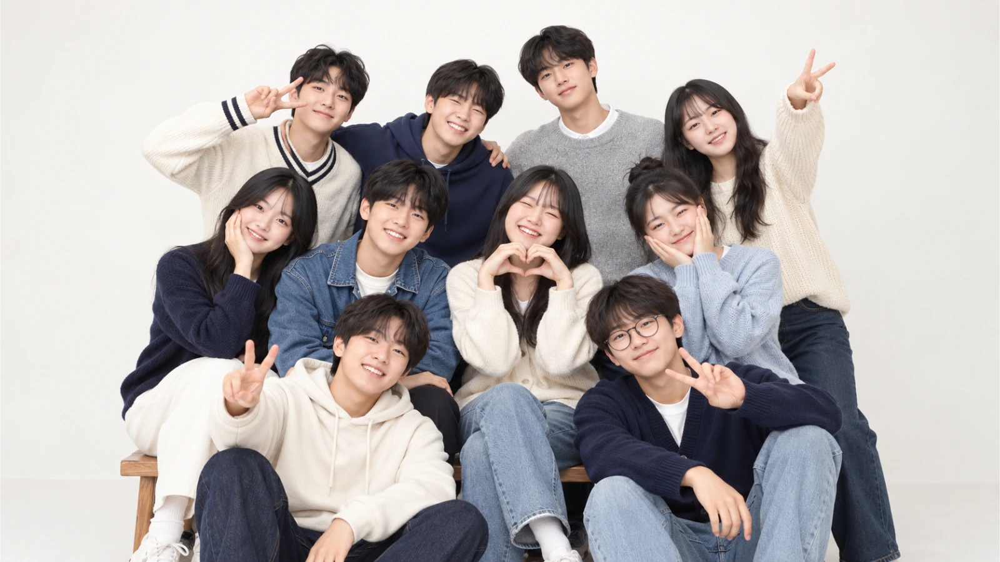
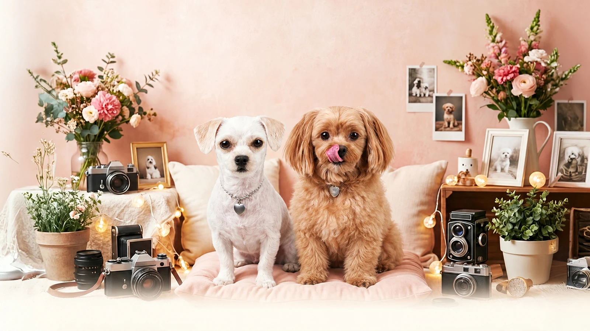
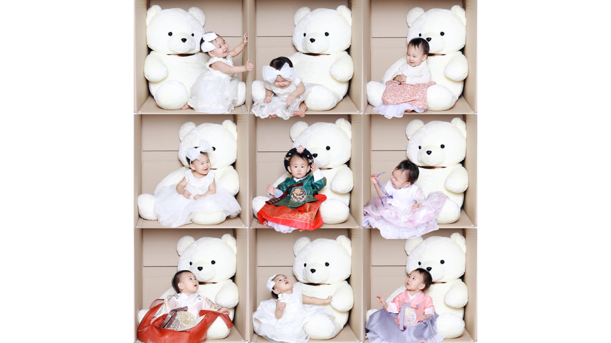
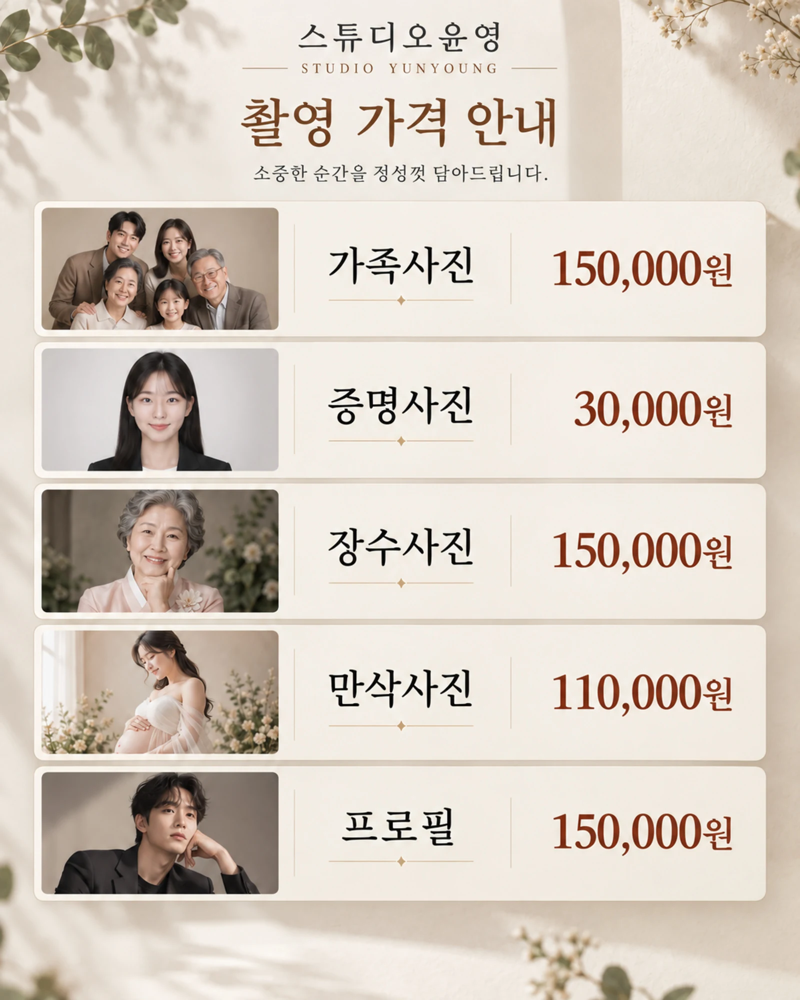

촬영 전 상담
촬영 목적과 원하는 분위기를 함께 이야기합니다.







나다운 표정, 우리 가족의 온기.
스튜디오윤영은 소중한 순간을 자연스럽게 담는
김제의 사진관입니다.
나다움을 담는 증명사진
표정과 인상이 자연스럽게 드러나도록 세심하게 촬영합니다.
함께하는 지금을 담는 가족사진
서로의 웃음과 온기, 우리 가족만의 이야기를 남깁니다.
매력을 전하는 제품사진과 영상
제품의 특징과 소중한 순간을 생생하게 담아냅니다.
편안한 촬영, 과하지 않은 보정.
시간이 지나도 자연스럽게 바라볼 수 있는 사진을 만듭니다.
카메라 앞에 서는 순간부터 사진을 완성할 때까지,
스튜디오윤영이 정성껏 함께하겠습니다.
촬영 목적과 원하는 분위기를 함께 이야기합니다.
편안한 분위기에서 표정과 자세를 안내합니다.
마음에 드는 사진을 선택합니다.
본래의 분위기를 살려 자연스럽게 보정하며, 보정 강도는 원하시는 정도에 맞춰 조절합니다.
상담 시 안내한 방법으로 완성된 사진을 전달합니다.
전화·네이버 예약·카카오톡을 통해 촬영을 예약하실 수 있습니다. 원하시는 촬영 종류와 일정을 선택하거나 알려주세요. 예약과 관련해 궁금한 점은 전화 또는 카카오톡으로 편하게 문의해 주세요.
원하는 사진 분위기와 사용 목적을 미리 알려주세요. 의상과 준비물은 촬영 종류에 맞춰 상담해 드립니다.
촬영 종류에 따라 상품 구성과 수령 방법이 다릅니다. 예약 상담 시 확인해 주세요.
카메라 앞에서 편안할 수 있도록 함께합니다.
그 사람다운 표정과 분위기를 살립니다.
사진의 쓰임과 원하는 느낌을 먼저 듣습니다.
시간이 지나도 자연스럽게 바라볼 수 있는 사진을 만듭니다.
작성 내용은 다른 방문자에게 공개되지 않습니다. 상담 문구를 복사한 뒤 연결된 예약·상담 서비스에 직접 전달해 주세요. 홈페이지에는 저장되거나 자동 전송되지 않습니다.
운영시간 10:00~20:00 · 매주 화요일 휴무
김제시 중앙로 138, 2층 사진관
이 홈페이지는 촬영 상품과 대표사진을 안내합니다. 예약 가능 시간, 최종 촬영 금액, 상품 구성 및 취소·변경 조건은 예약 전 스튜디오에 문의해 주세요. 예약은 전화 또는 연결된 외부 서비스에서 진행됩니다.
이 HTML 페이지에는 회원가입·서버로 정보를 전송하는 입력 폼이나 분석·광고 추적 스크립트가 없습니다. 전화 상담 또는 네이버·카카오톡·인스타그램으로 이동하여 제공하는 정보는 해당 서비스와 스튜디오의 별도 안내를 확인해 주세요. 개인정보 관련 문의: 010-2872-0100. 이 안내는 스튜디오의 전체 개인정보 처리방침을 대신하지 않습니다. 상담 준비 항목은 브라우저 안에서 문구를 만드는 데만 사용되며 자동 전송·저장되지 않습니다.